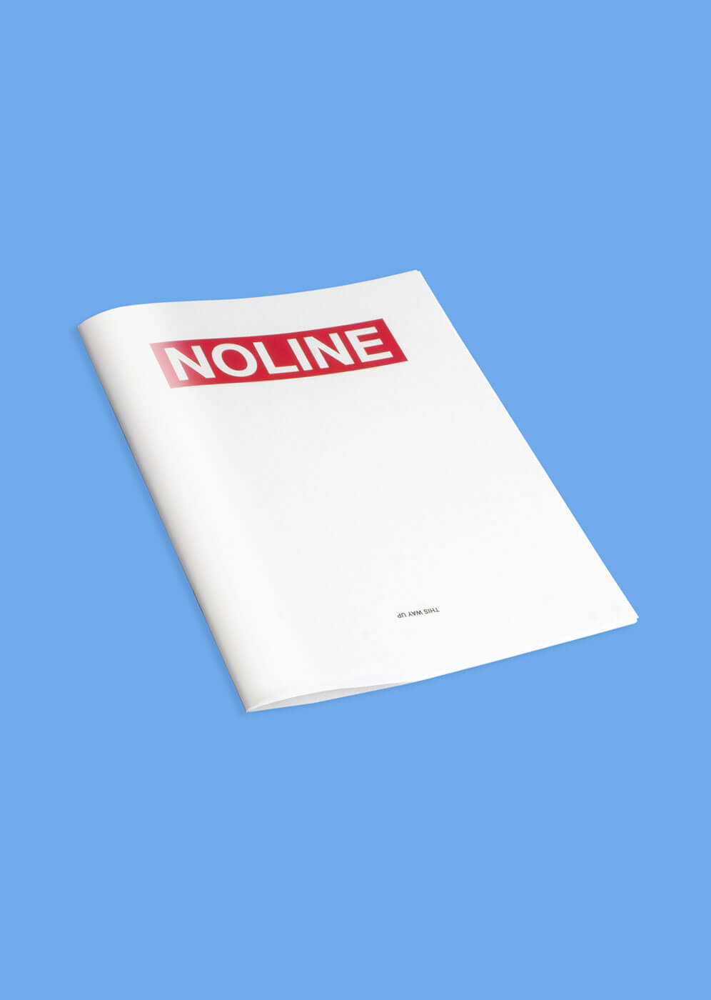
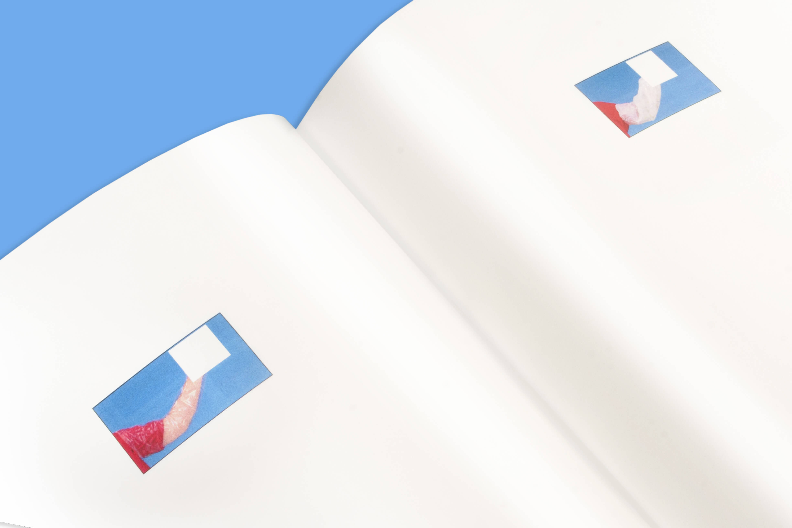
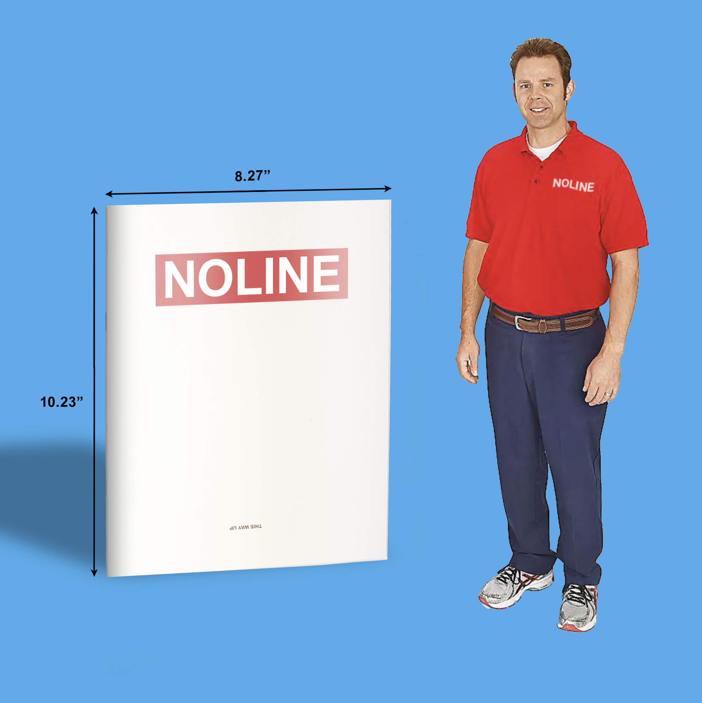

ANGUS PLUNKETT
—> Noline
Project Info
An exploration into Uline's product photography. With the crucial elements removed from each product shot, the photographs take a new and interesting form.
(close)



Related Projects
—> Project 1
, Branding, Illustration & Image Making, 2017 — Present
—> Project 2
, Branding, Illustration & Image Making, 2017 — Present
—> Project 3
, Branding, Illustration & Image Making, 2017 — Present